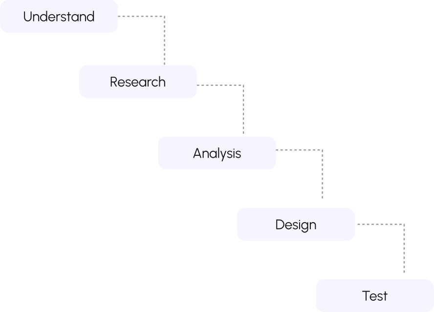
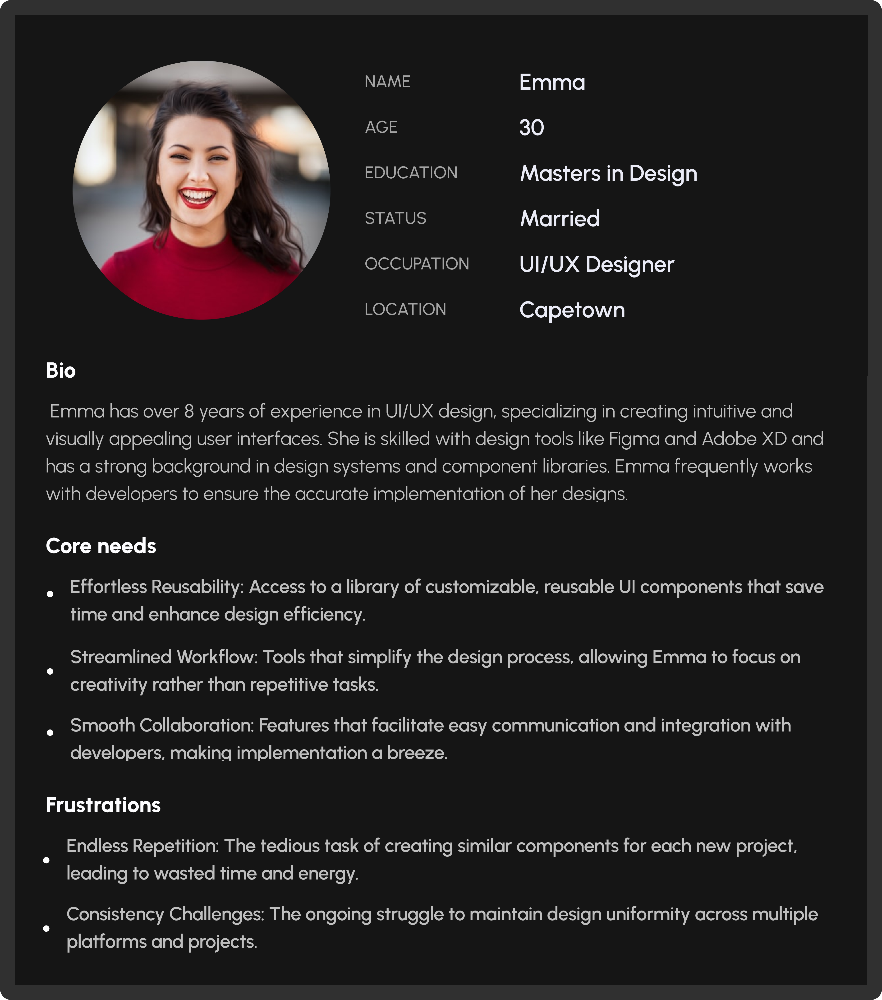

NFC GYM Tracker
A quick and easy way to connect and access your GYM
app with ease tracking and logging in workouts

A quick and easy way to connect and access your GYM
app with ease tracking and logging in workouts
I was responsible for designing screens which includes: Home Page, About Us, Pricing, Blogs, login/sign up flow and password retrieval flow. I gave and received supports from my team mate which helped in overall success of the project completion
The Gym Equipment Tracker app is designed to revolutionise the gym experience by integrating modern technology for enhanced
convenience and efficiency. By utilising NFC (Near Field Communication) tags—discreet stickers attached to each piece of gym
equipment—the app allows users to interact with gym machines in a more intelligent and intuitive way.
With a simple scan using their smartphones, users can effortlessly log their workouts, access detailed exercise instructions,
and receive real-time updates on equipment maintenance status. This innovation not only streamlines the user experience but also
promotes safety and informed decision-making, making it an essential tool for both fitness enthusiasts and gym administrators.
The Gym Equipment Tracker App is an innovative mobile application designed to enhance the gym-going experience by integrating
NFC (Near Field Communication) technology with gym equipment. The app streamlines the process of logging workouts, accessing
exercise instructions, and monitoring equipment maintenance, all through the simple act of scanning NFC tags attached to gym machines.
Core Features:
The Gym Equipment Tracker app aims to enhance the gym experience by offering a seamless, technology-driven solution for both users and staff.
Key goals include improving user engagement with easy workout tracking and safety through accurate equipment information.
For gym staff, the app simplifies equipment management and maintenance, ensuring everything operates smoothly.
Gym Users:
Gym Administrators:
The design process for the Gym Equipment Tracker app was user-centered, starting with research to identify key needs. Prototyping and testing ensured a smooth, intuitive interface, while iterative improvements aligned the app with user expectations, resulting in a highly efficient tool for gym-goers and staff.
The purpose of the user research is to gather insights that will guide the development of the Convey AI image-to-video generator, ensuring it meets the needs of both individual and business users. This research will focus on understanding user behaviors, pain points, and preferences to create a tool that simplifies and enhances the video creation process.
The users can personalized fitness companion here, view details instructions and videos for each equipment and keep a detailed log of your exercises and monitor your improvements over time.
The users are able to use the Scan NFC Screen for scanning NFC their gym equipments for informations about the equipment.
Welcome to your NFC Home—where fitness meets smart tracking. Scan, track, and optimize your workouts effortlessly. Access exercise instructions, log your progress, and stay on top of your fitness goals—all in one place.
Track your progress by logging each workout. Record exercises, reps, and sets to stay on top of your fitness journey. Keep motivated by seeing your growth over time.
Effortlessly manage and maintain gym equipment with the NFC Gym Tracker's Maintenance feature. Simply scan NFC tags to access real-time equipment details, schedule routine checks, and report issues instantly.
Individuals with hearing impairments often face challenges in staying connected and aware of their surroundings due to the limitations of traditional notification systems.

During user testing for the NFC feature of the Gym Equipment Tracker app, we focused on evaluating the ease and speed of
scanning NFC tags on gym equipment.
Testers scanned various machines to access workout logs, exercise instructions, and maintenance status.
Feedback highlighted the intuitive design and quick response times, confirming the feature's effectiveness in
streamlining gym interactions.
Working on this problem helped to widen our understanding of NFC Mobile applications, how it functions and how useful it will be for users to navigate their GYM Tracker app. All these helped us to find the best features that solved the key problems of our users. Although it was very challenging for us but we found ways to break into solutions that makes GYM Tracker unique.
There are still some challenges we hope to find solutions to and make them into features that our users will find useful. This, we plan to do with more user testing of the app to ensure it suites into our users needs